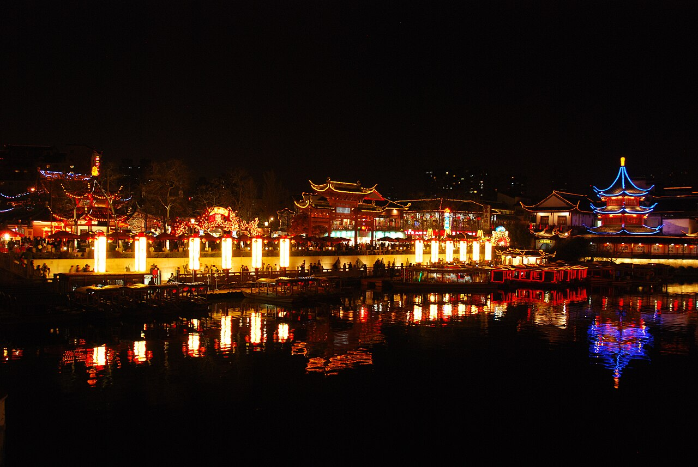

第1天
先把傍晚留给河岸
老门东慢行，再去夫子庙秦淮河一带。想乘船时，另查运营时段与票务。
让旅行，慢一点。

从秦淮灯影到湖上亭桥，再走进园林与小巷。六天，看风景，也看日常。
旅行总览
适合喜欢历史、园林与街巷漫步的旅行者。每天保留一个重点，不把跨城日排成景点清单。
第1—2天 · 城与河
第3—4天 · 湖与运河
第5—6天 · 园与巷
安顿后逛老门东，
傍晚去夫子庙秦淮河畔。
按兴趣与预约择一，
留出从容的参观时间。
上午预留交通时间，
抵达后沿湖看亭桥。
按预约参观运博，
傍晚去东关街散步。
抵达后漫步平江路，
把下午留给河街。
拙政园或苏博本馆择一，
再从容返程。
第1—2天
白天读城，
入夜看水。

秦淮河沿岸串起夫子庙、历史街巷与名人故居。老门东保留着传统民居的空间气质，适合把“看古都”拆成一段段步行。
老门东慢行，再去夫子庙秦淮河一带。想乘船时，另查运营时段与票务。
喜欢山林与建筑，去钟山；偏爱文物与展览，预约南京博物院。
第3—4天
一湖亭桥，
一城早茶。
瘦西湖的水面串起五亭桥、白塔、二十四桥等景观；中国大运河博物馆则让这趟旅行从“看水”，走向理解水与城市的关系。
从南京转往扬州，先安顿再游瘦西湖。沿湖慢走，不必追着每一处景点赶路。
早餐坐下来吃，按预约参观运博；傍晚再到东关街，把步调放轻。
第5—6天
一座园林里，
藏着另一种山水。

苏州古典园林用池水、山石、植物与建筑，在有限空间里组织山水。看过园林，再走进平江路的河街，让风景回到城市日常。
从扬州转往苏州，抵达后漫步平江路一带。给跨城交通留余量，晚上不再塞入远途景点。
选拙政园看空间，或预约苏博本馆看建筑与馆藏；依返程时间决定停留长度。
内容依据：UNESCO 苏州古典园林、苏州文旅答疑、苏州地方志。
出发之前
第3天、第5天跨城。车次、车站和接驳按日期另查；不要把到站时间当作到景区时间。
遇到闭馆、雨天或预约未成功，可调换日程。带好证件和雨具，按同行者体力减少步行。